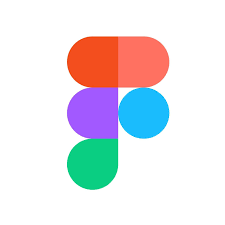

MY Vision
is to become aproficient and versatile
software developer
who not only excels
in coding but also possesses a deep understanding
of software architecture I am capable to
build
user-friandly Website
that solve real world challenges.
. HARD WORKING
.HONESTLY
.PROBLEM SOLVING
.MEETING REQUIREMENT
.CREATION HIGH-QUALITY CODES